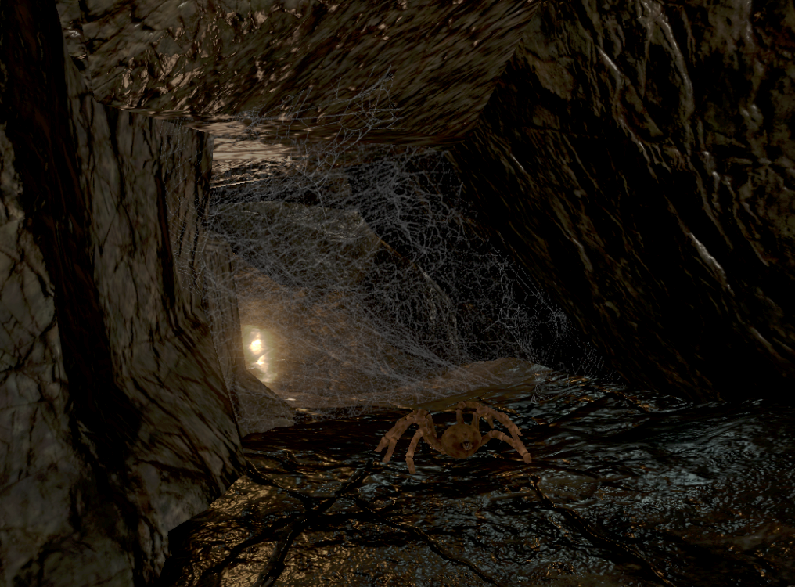
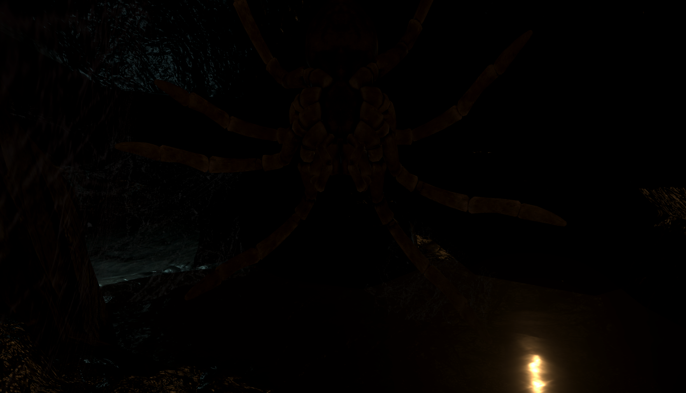
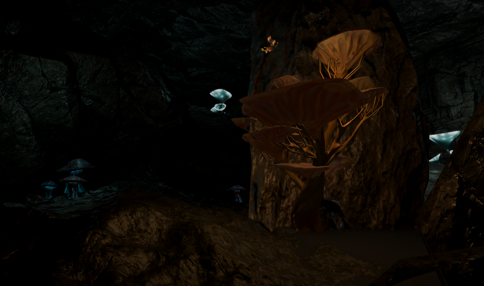
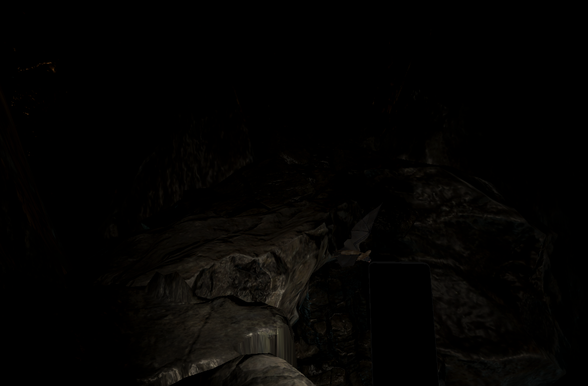
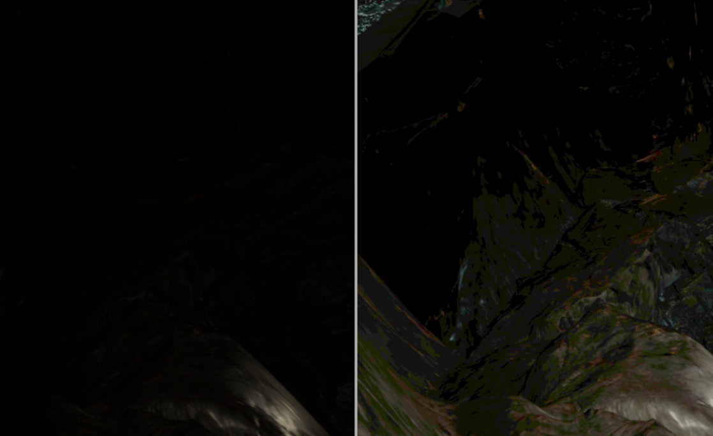

Phobia Based VR Horror Game
Grade:
10.0
Study Period:
first-semester project in MSc
Duration:
7 days
Technologies:
VR, Unity, Unity timelines, C#, Blender
Team Size:
1
This game is an immersive VR horror experience that pushes the boundaries of fear by targeting common phobias without relying on jumpscares or deadly situations. Set in a dark, flooded cave system, players face a series of uncomfortable and terrifying scenarios designed to trigger deep-seated anxieties. To ensure maximum potential, I have drawn inspiration from the developer commentary of Half-Life: Alyx, which helped significantly in designing the game.
VR technology, with its 3D vision capabilities, offers distinctive opportunities for incorporating horror elements, such as the sensations of height, confined spaces, and the unnerving feeling of bugs crawling on the player's face. The game features 15 carefully crafted sections, each aiming to evoke a specific emotional response, resulting in a heart-pounding journey through the depths of players' fears.
The first part is tailored to trigger claustrophobic individuals by forcing them to navigate through a flooded, narrow cave system with water levels gradually rising. The second part focuses on the fear of heights, where players must walk along a narrow cliff edge while encountering enormous spiders. The third part follows a bug theme, requiring the player to crawl through cobwebs with spiders and ultimately experiencing a spider crawling on their face. Afterward, a simple relief area is provided as the experience comes to an end.
Teacher Feedback
Strengths: That was a bloody incredible experience! Everything from the concept, to design, to implementation, is absolutely solid. This is created as a multi-sensory experience that uses every trick in the book to plant a living and breathing world inside the users' mind, causing a deep instinctual response. What is perhaps the most impressive here is how convincingly all the different elements tie together to strengthen the illusion, including super subtle details like the handheld phone, wet surfaces, crawling insects, dripping water effects and distant sounds. The sound should be mentioned here as a particular achievement on its own, the mix of sounds is perfect and the effects such as localization and reverb makes it all so believable. This must have taken a lot of effort to put together, and a lot of iteration and refinement. Congratulations, what an achievement!
Weaknesses: Seriously hard to pick on anything here. I kind of wished the experience could have lasted longer and that I could have done more in that last cave, but given the time constraints, you have already delivered something more refined than was expected.
Image Gallery
-

An image depicting the player navigating through dense cobwebs in order to progress, as their phone is out of battery and they have no flashlight. They are forced to move towards the light, while spiders scurry within the cobwebs, foreshadowing the upcoming events.
-

An image capturing a spider crawling on the player's head, an uncomfortable scene even for me who isn't afraid of spiders and has playtested the game multiple times.
-

An image of the end area, where the player can take a break and catch their breath.
-

A cliff section image featuring bats flying around, adding to the atmosphere.
-

A side-by-side comparison showcasing the game's appearance on a monitor (left) versus the VR experience (right) when the player's eyes have adjusted to the darkness. This contrast presented some development challenges.